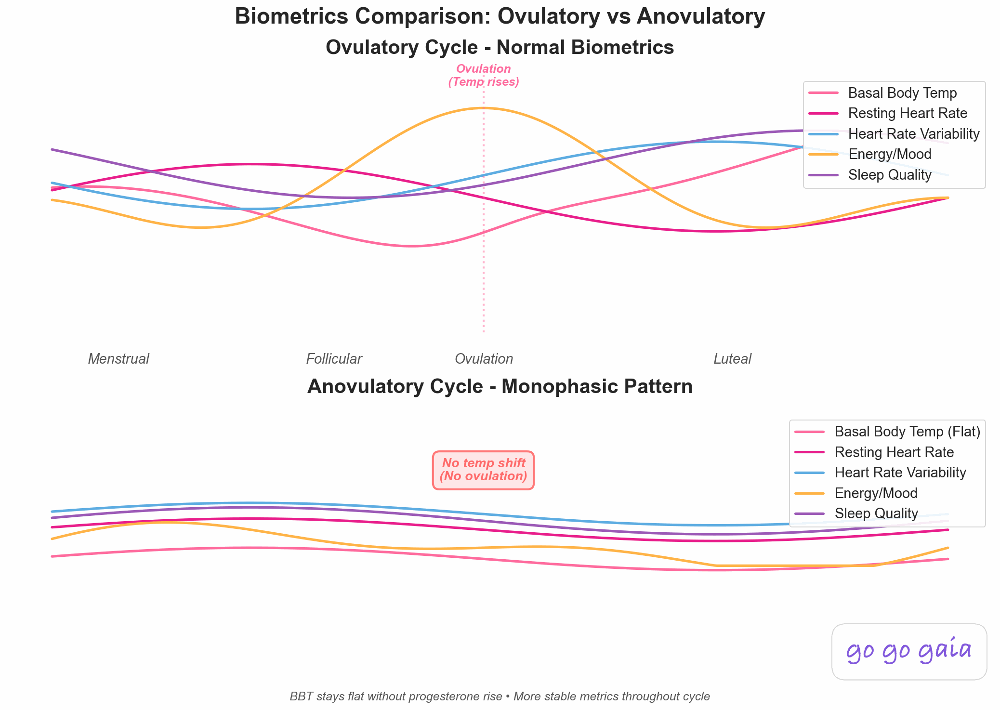

Best Ovulation Tracker App 2026: 6 Apps Compared for Finding Your Fertile Window
Your fertile window is only about 6 days each cycle: the 5 days before ovulation plus ovulation day itself, because sperm can survive in your body for up to 5 days. The right app helps you find those days instead of guessing. We compared 6 apps on how they predict ovulation, whether they confirm it, and how they handle irregular cycles.
Quick Answer: Best Ovulation Tracker App?
- Best for reading ovulation test strips: Premom. Free strip reader that turns OPK photos into a numeric LH curve
- Best FDA-cleared, temperature-based option: Natural Cycles. Cleared as both birth control and pregnancy planning, works with Oura, Apple Watch, and Garmin
- Best test-kit accuracy: Clearblue Connected. Dual-hormone tests that catch more fertile days than LH alone
- Easiest general option: Flo. Simple predictions and the largest community
- Best free detailed logging: Ovia Fertility. Extensive symptom and lifestyle tracking at no cost
- Best all-in-one tracker (free): Go Go Gaia. LH logging, wearable temperature, and cervical mucus in one chart, alongside sleep, mood, and nutrition
Ovulation apps all promise the same thing: tell you when your fertile days are. But they get there in very different ways. Some do calendar math from your period dates. Some read photos of test strips. Some watch your temperature overnight. Some require a kit of tests that cost real money every month.
This guide covers which method each app uses, what each one honestly does well, what it costs, and which one fits your situation, whether your cycles are regular, irregular, or you're tracking with PCOS. If you want the biology first (what ovulation feels like, what cervical mucus changes mean), start with our guide on how to tell if you're ovulating and come back.
Full Transparency
This guide is published by Holland Neurotech Inc., the company behind Go Go Gaia. We've compared each app based on its actual ovulation-tracking method, recent user reviews, and publicly available information, with pricing checked at the end of May 2026. Every app here has real strengths, and the best one for you depends on your situation.
We included Go Go Gaia because we think it's a strong option, but we'll be honest about what it doesn't do, including the one thing two other apps here clearly do better.
Medical Disclaimer
This article is for educational and informational purposes only and does not constitute medical advice. Ovulation tracking apps can help you understand your cycle, but no app can diagnose a fertility issue or replace assessment by a qualified healthcare provider. If you've been trying to conceive without success, have very irregular cycles, or have a condition like PCOS, endometriosis, or a thyroid disorder, please talk with your doctor or a fertility specialist. Apps used for pregnancy prevention have real failure rates, so discuss contraception choices with your healthcare provider. Individual results vary.
Step 1: What Actually Makes Ovulation Tracking Accurate
Before comparing apps, it helps to know what "accurate" even means here. Landmark research published in the New England Journal of Medicine found that nearly all pregnancies came from intercourse during a 6-day window ending on ovulation day.[1] ACOG explains why: sperm can live inside your body for up to 5 days, while the egg survives less than a day after release.[2]
So the question every app is really answering is: when does that 6-day window open? There are two halves to answering it well.
Predicting: The LH Surge
Luteinizing hormone (LH) surges 24 to 36 hours before ovulation.[3] That's the signal ovulation test strips (OPKs) detect. A positive LH test is the best advance warning your body gives you, which makes it the most useful signal if you're trying to conceive. Cervical mucus changes (clear, stretchy, egg-white texture) also predict, usually a few days ahead.
Confirming: The Temperature Shift
After ovulation, progesterone raises your resting body temperature by roughly 0.5 degrees Fahrenheit, and it stays elevated until your next period.[2] A sustained temperature rise is how you know ovulation actually happened, not just that it was supposed to. This matters more than people expect, because some cycles are anovulatory (no egg is released), especially with PCOS, after stopping birth control, during high stress, or approaching perimenopause.

Here's the central point of this whole comparison: the most accurate ovulation tracking combines an LH signal that predicts ovulation with a temperature shift that confirms it. Calendar predictions alone are the weakest method, because ovulation timing moves around even in regular cycles. Each app below leans on a different mix of these signals, and that's the main thing that separates them.
Then Ask Yourself Three Questions
- Are your cycles regular? If yes, almost any method works reasonably well. If no, calendar-based predictions will frustrate you, and hormone or temperature signals become essential.
- How much daily effort feels sustainable? Test strips mean testing most days mid-cycle. Wearable temperature tracking happens while you sleep. Calendar apps need nothing but your period dates. Be honest about what you'll keep doing for 3 months.
- What's your budget? The options below range from completely free to a subscription plus hardware that totals several hundred dollars a year.
Step 2: The 6 Apps Compared
For All-in-One Signal Tracking: Go Go Gaia
Best if you want: LH results, wearable temperature, and cervical mucus on one chart, next to the sleep, stress, and nutrition patterns that affect your cycle.
Key Features
- Manual LH test logging with your fertile window updated as you log
- Basal body temperature pulled automatically from Apple Watch, Oura Ring, or Garmin
- Cervical mucus and ovulation symptom logging
- Fertile window prediction that improves as your data builds
- Sleep, mood, nutrition, and fitness tracking in the same app
- Correlation insights that connect lifestyle factors to your cycle
- Doctor-ready data export
- Pregnancy mode, so the app transitions with you when you conceive
Strengths
- Covers both halves of accurate tracking: LH logging for prediction and wearable temperature for confirmation, in one free app
- Wearable integration means temperature gets tracked while you sleep, no separate thermometer routine
- Shows the lifestyle context (sleep, stress, nutrition) that other ovulation apps leave out
- No app switching when you get pregnant, your history carries over
- No ads, no data selling
Limitations
- iOS only. No Android version yet
- No built-in OPK photo reader. You log LH results manually rather than the app reading a strip photo, which Premom and Clearblue both handle for you
- Newer app with a smaller community than the established options here
Who Should Choose This
Go Go Gaia is ideal if you:
- Want to combine LH tests, temperature, and mucus signals instead of relying on one
- Already wear an Apple Watch, Oura Ring, or Garmin
- Want to see how sleep, stress, and nutrition line up with your cycle
- Plan to keep tracking through pregnancy if you conceive
Pricing: Free (core features including LH logging, temperature, and fertile window prediction), Premium ~$12/month for AI insights and advanced correlations.
Download: Available on iOS App Store
For Reading Ovulation Test Strips: Premom
Best if you want: your phone to read your ovulation test strips and chart the results for you.
Key Features
- Photo-based OPK reader: snap a picture of any test strip and the app assigns a numeric LH value
- Quantitative LH curve charts that show your hormone progression across the cycle
- BBT and cervical mucus logging
- Period and cycle tracking with ovulation predictions
- Works with Easy@Home and Premom brand test strips (and reads most others)
Strengths
- The strip reader is genuinely excellent, and it's free. Instead of squinting at two lines wondering if one is "dark enough," you get a number
- The numeric LH curve is especially useful with PCOS or irregular cycles, where your absolute LH pattern tells you more than a single positive or negative result
- Charts make it easy to see your surge building across several days of testing
- Cross-platform (iOS and Android)
Limitations
- Privacy history worth knowing: in 2023, Easy Healthcare (Premom's maker) settled with the FTC and three jurisdictions for $200,000 over sharing users' health data with third parties, including Google, AppsFlyer, and two China-based analytics firms, without consent. The FTC order now bars Premom from sharing health data for advertising and requires consent for other sharing[4]
- Predictions lean on you testing consistently. The app is at its best when you're using strips most days mid-cycle
- Test strips are an ongoing cost, and the app naturally steers you toward its own brand
- No nutrition, sleep, or broader health tracking
Who Should Choose This
Premom is ideal if you:
- Already use (or plan to use) ovulation test strips regularly
- Want numeric LH values instead of eyeballing line darkness
- Have PCOS or irregular cycles and want to see your full LH curve
- Want a free app and don't mind the cost of strips
Pricing: Free, including the strip reader. An optional Premium subscription is sold as an in-app purchase (Premom doesn't publish a single list price, so check current pricing in the app). Test strips sold separately, typically $10 to $28 per pack.
Download: Available on iOS and Android via premom.com
For FDA-Cleared Temperature Tracking: Natural Cycles
Best if you want: a clinically validated, temperature-based system, especially if you already wear an Oura Ring or Apple Watch.
Key Features
- FDA-cleared algorithm. Natural Cycles was the first app cleared by the FDA as birth control (2018), and it's also cleared to plan pregnancy[5]
- Ovulation detection from basal body temperature, with optional LH test logging
- Works hands-off with the NC° Band, Oura Ring, Apple Watch (Series 8 and later), or Garmin
- Daily fertility status: green (not fertile) or red (use protection / fertile day)
- Doubles as a non-hormonal birth control method when used to prevent pregnancy
Strengths
- The FDA clearance is real and rare. The algorithm has been through clinical validation that most apps on this list haven't
- With a compatible wearable, tracking is genuinely passive: wear it to sleep and the data shows up
- One subscription covers both planning and preventing pregnancy, which is useful if your goals change
- FSA/HSA eligible in the US
Limitations
- Paid only. There's no free tier, just a trial period
- Temperature confirms ovulation after it happens. For predicting fertile days ahead of time, the algorithm relies on your cycle history, so it gives less advance warning than LH testing in your first months of use
- Needs consistent daily temperature data. Disrupted sleep, travel, and irregular schedules degrade the data
- The company notes the method works best with reasonably regular cycles, so it's a weaker fit for PCOS
- Costs add up: the subscription plus a wearable (an Oura Ring runs $249 or more, plus Oura's own membership) is the most expensive path on this list
Who Should Choose This
Natural Cycles is ideal if you:
- Want a clinically validated method rather than an informal tracker
- Already own an Oura Ring, newer Apple Watch, or Garmin
- Want one system that can switch between preventing and planning pregnancy
- Have fairly regular cycles and a consistent sleep routine
Pricing: Subscription only, roughly $100 to $150 per year or about $20 per month (the annual plan includes a basal thermometer). Wearables cost extra. Pricing varies by plan and promotion, so check naturalcycles.com for current rates.
Download: Available for iOS and Android via naturalcycles.com
For Dual-Hormone Test Accuracy: Clearblue Connected Ovulation Test System
Best if you want: a clinically backed test kit that finds more fertile days than standard LH strips, with results that sync to your phone automatically.
Key Features
- Dual-hormone testing: tracks estrogen rise and the LH surge, not just LH
- Over 99% accurate at detecting the LH surge[6]
- Typically identifies 4 or more fertile days per cycle, because the estrogen rise comes before the LH surge
- Test holder syncs results to the Clearblue Connected app over Bluetooth
- Testing reminders and cycle charts in the app
Strengths
- The dual-hormone approach gives you more advance notice than LH-only testing. Catching the estrogen rise means you learn your window is opening days earlier
- Digital results, so there's no line interpretation at all
- Clearblue's accuracy claims are backed by published clinical data, which is more than most consumer fertility products can say
- Results land in the app automatically, no manual logging or photos
Limitations
- It's a test-kit ecosystem with an ongoing cost. You're buying packs of tests for as long as you're tracking
- The app is a companion to the tests rather than a full cycle or health tracker. Outside of test results and reminders, it's thin
- No temperature tracking, so it predicts ovulation but doesn't confirm it happened
- Like all urine hormone tests, results can be harder to interpret with PCOS
Who Should Choose This
Clearblue Connected is ideal if you:
- Want maximum advance notice of your fertile window
- Prefer a digital yes/no result over interpreting strip darkness
- Are comfortable with an ongoing test cost while trying to conceive
- Want a companion app to a clinically validated test, not an everything tracker
Pricing: The app is free. Test kits are sold per pack (commonly 20 to 25 tests per box), and you'll typically use one pack or more per cycle of focused testing.
Download: Available for iOS and Android via clearblue.com
For Simple, Popular Tracking: Flo
Best if you want: the easiest possible start, with predictions that improve as you log and the largest community of users.
Key Features
- Period and ovulation predictions from your logged cycle data
- Symptom, mood, and discharge logging
- LH test result logging (manual)
- Large educational content library and AI chatbot
- Anonymous Mode for logging without personal identifiers
Strengths
- The largest user base of any cycle app (420M+ downloads), with a huge community and content library
- Very low effort: log your periods and a few symptoms and the predictions handle the rest
- Anonymous Mode is a genuinely useful privacy feature for sensitive health data
- Cross-platform (iOS and Android)
Limitations
- Ovulation is predicted from cycle history, not confirmed. The predictions are calendar/algorithm estimates and are less reliable for irregular cycles
- No wearable temperature integration for ovulation confirmation
- Privacy history worth knowing: a 2021 FTC settlement over sharing health data with Facebook and Google. Flo has since added Anonymous Mode
- Much of the educational content and detailed insights sit behind the Premium paywall
Who Should Choose This
Flo is ideal if you:
- Have regular cycles and want a low-effort estimate of your fertile window
- Are early in trying to conceive and not ready for daily testing
- Want lots of articles and a community alongside tracking
- Need an Android option
Pricing: Free (limited features and ads), Flo Premium ~$39.99/year.
Download: Available on iOS and Android
For Detailed Free Logging: Ovia Fertility
Best if you want: to log a lot of detail, every day, without paying anything.
Key Features
- Extensive symptom and lifestyle logging (cervical mucus, BBT, mood, sleep, exercise, nutrition notes)
- Proprietary fertility score and fertile window prediction
- Manual LH and pregnancy test logging
- Educational content and tips
- Companion pregnancy and parenting apps for later stages
Strengths
- Most features are free, which makes it one of the most generous free tiers in fertility tracking
- Built for detail-oriented people: if you want to log everything, Ovia has a field for it
- The fertility score gives a single daily number, which some people find motivating
- Cross-platform (iOS and Android)
Limitations
- A doctor review noted Ovia's predictions "aren't always clinically precise," and the fertility score's logic isn't transparent
- Data sharing worth knowing: Ovia offers employer-sponsored versions, and health data can flow into workplace wellness programs. The privacy policy is long and worth reading before you sign up through an employer
- The fertility score system can feel complex compared with a simple fertile window
- No wearable temperature integration for ovulation confirmation
Who Should Choose This
Ovia Fertility is ideal if you:
- Want detailed daily logging without a subscription
- Like having a single daily fertility score to act on
- Are using your personal account, not an employer-sponsored one, or are comfortable after reading the privacy policy
- Need an Android option
Pricing: Free (most features).
Download: Available for iOS and Android via oviahealth.com
Worth Noting: At-Home Hormone Monitors and Wearables
A growing category sits between test strips and lab work: hardware that measures your hormones or temperature directly and pairs with its own app. These cost more than any app on this list, but they're worth knowing about if you want lab-style data at home:
- Mira measures actual hormone concentrations (estrogen, LH, progesterone, and FSH on some kits) from urine using a small reader. Quantitative numbers, not lines. Starter kits run about $249 and up.
- Inito measures estrogen, LH, PdG (a progesterone marker), and FSH on a single strip read by a device that attaches to your phone. Around $189 and up, with a wireless model released in 2025.
- Oova tests LH and PdG with lab-quality results and is designed to share data with your clinician, which makes it popular in fertility clinic settings.
- Tempdrop is a wearable BBT armband you wear overnight. It filters out disturbed sleep and reports over 98% accuracy at detecting ovulation. About $189, with a free companion app.
Feature Comparison Table
Here's how the 6 apps stack up on the things that matter most for ovulation tracking:
| Feature | Go Go Gaia | Premom | Natural Cycles | Clearblue Connected | Flo | Ovia Fertility |
|---|---|---|---|---|---|---|
| Prediction Method | LH + BBT + mucus | LH curve | BBT algorithm | Estrogen + LH | Calendar/algorithm | Calendar + logged signs |
| Reads OPK Strip Photos | ❌ Manual logging | ✅ Yes, with numeric LH | ❌ | ✅ Auto via Bluetooth | ❌ Manual logging | ❌ Manual logging |
| Manual LH Logging | ✅ Yes | ✅ Yes | ✅ Yes | ✅ Auto | ✅ Yes | ✅ Yes |
| BBT / Temperature Tracking | ✅ Via wearable | ✅ Manual | ✅ Core feature | ❌ | ⚠️ Manual, basic | ✅ Manual |
| Wearable Integration | ✅ Apple Watch, Oura, Garmin | ❌ | ✅ NC° Band, Oura, Apple Watch, Garmin | ❌ | ⚠️ Basic | ❌ |
| Cervical Mucus Tracking | ✅ Yes | ✅ Yes | ⚠️ Optional | ❌ | ✅ Yes | ✅ Yes |
| Confirms Ovulation (vs Only Predicts) | ✅ Via temperature | ⚠️ If you log BBT | ✅ Core feature | ❌ Predicts only | ❌ Predicts only | ⚠️ If you log BBT |
| Works for Irregular Cycles | ⚠️ Better with LH + BBT | ✅ LH curve helps | ⚠️ Best with regular cycles | ⚠️ Harder with PCOS | ❌ Calendar-based | ⚠️ Limited |
| Requires Hardware / Test Kits | ⚠️ Wearable optional | ⚠️ Strips needed | ✅ Thermometer or wearable | ✅ Test kits required | ❌ None | ❌ None |
| Nutrition / Sleep / Mood Tracking | ✅ All three | ❌ | ❌ | ❌ | ⚠️ Mood + symptoms | ✅ Logged manually |
| Doctor Data Export | ✅ Free | ✅ Reports | ⚠️ Limited | ❌ | ⚠️ Limited | ⚠️ Limited |
| Privacy Practices | ✅ No data selling | ⚠️ 2023 FTC order | ✅ Strong | ✅ Standard | ⚠️ 2021 FTC, has Anonymous Mode | ⚠️ Employer programs |
| Free Tier Quality | ✅ Generous | ✅ Strip reader free | ❌ No free tier | ✅ App free, tests cost | ⚠️ Limited + ads | ✅ Most features free |
| Price | Free, ~$12/mo premium | Free + strips | ~$100-150/yr | Free app + test packs | Free, ~$39.99/yr premium | Free |
| Best For | All signals in one | Strip reading | FDA-cleared method | Test accuracy | Easiest start | Free detail |
Step 3: Making Your Decision
Here's the bottom line for each app:
Choose Premom if:
- You're testing with OPK strips and want them read and charted automatically
- You want a numeric LH curve rather than interpreting line darkness
- You have irregular cycles or PCOS and want to see your actual hormone pattern
Choose Natural Cycles if:
- You want an FDA-cleared, clinically validated method
- You already wear an Oura Ring, newer Apple Watch, or Garmin
- You want one system for both preventing and planning pregnancy
- Your cycles are reasonably regular
Choose Clearblue Connected if:
- You want the most advance notice of your fertile window from a urine test
- You prefer digital results over reading lines
- You're comfortable with an ongoing test cost while trying to conceive
Choose Flo if:
- Your cycles are regular and you want a low-effort estimate
- You're early in trying to conceive and not ready for daily testing
- You want a big community and content library alongside tracking
Choose Ovia Fertility if:
- You want detailed daily logging completely free
- You like a single daily fertility score
- You've read and are comfortable with its data practices
Choose Go Go Gaia if:
- You want LH tests, wearable temperature, and cervical mucus on one chart
- You want sleep, stress, and nutrition tracked alongside your cycle
- You're on iOS and want a free app that transitions to pregnancy mode if you conceive
Privacy Considerations
Fertility data is some of the most sensitive health data there is. It can reveal when you're trying to conceive, when you're pregnant, and when you're not anymore. Here's what's worth knowing for each app:
- Premom settled with the FTC and three jurisdictions in 2023 ($200,000 total) over sharing users' health data with third parties without consent, including Google, AppsFlyer, and two China-based analytics firms. The settlement order now bars Premom from sharing health data for advertising and requires consent for any other sharing.[4] The order changed the company's practices, but the history is part of an informed decision.
- Flo settled with the FTC in 2021 over sharing health data with Facebook and Google. It has since added Anonymous Mode, which lets you use the app without tying data to your identity.
- Ovia offers employer-sponsored versions where aggregated health data can flow into workplace wellness programs. If your access comes through work, read what's shared before logging.
- Natural Cycles and Clearblue have standard health-data policies without notable enforcement actions. Natural Cycles is based in Sweden and subject to EU privacy law.
- Go Go Gaia doesn't sell data and doesn't run ads. Your data stays your own, and you can export or delete it.
Whatever app you choose, it's worth two minutes to check: does it sell or share data with advertisers, can you use it anonymously, and can you delete your data completely?
Tips for Getting Started
Whichever app you pick, a few habits make ovulation tracking dramatically more useful:
- Give it 2 to 3 cycles before judging. Every method needs baseline data. The first cycle is calibration, not results.
- Combine a predictor with a confirmer. LH tests or mucus changes tell you the window is opening. A temperature shift tells you ovulation actually happened. Together they cover each other's blind spots.
- Log even the boring days. Negative LH tests and "nothing happening" days are data. The contrast is what makes your surge visible.
- Don't move your testing window around. If you're using strips, test at roughly the same time each day. LH levels swing within a day, and consistency keeps results comparable.
- Note disruptions. Illness, travel, terrible sleep, and high stress can shift ovulation or muddy temperature data. A quick note saves you from misreading the chart later.
- Bring your chart to your doctor if something looks off. Flat temperatures every cycle, never catching a surge, or wildly variable cycle lengths are all worth a conversation, and a chart makes that conversation concrete.
Pro Tip
If you want a quick estimate of your fertile window while your tracking data builds, our free ovulation calculator gives you a starting point from your last period date. Just remember it's calendar math, the least precise method here. Use it to know when to start testing, not as the final answer.
Frequently Asked Questions
What's the most accurate way to track ovulation?
Combining two signals: an LH test that predicts ovulation is coming, and a temperature shift that confirms it happened. LH surges 24 to 36 hours before ovulation, so a positive test tells you it's about to happen. Basal body temperature rises roughly 0.5 degrees Fahrenheit after ovulation and stays elevated, which confirms it actually occurred. Apps that handle both signals, through LH logging plus a wearable or thermometer, give you prediction and confirmation on the same chart. A calendar estimate alone is the least reliable method because ovulation timing shifts from cycle to cycle.
Do I need ovulation test strips or is an app enough?
It depends on your cycles and your goal. If your cycles are regular and you just want a rough sense of your fertile window, an app's calendar predictions are a reasonable starting point. If you're actively trying to conceive, test strips add real hormonal data. LH strips are inexpensive (typically $10 to $30 per pack), and a positive result means ovulation is likely within 24 to 36 hours, which is far more precise than a date estimate. If your cycles are irregular, date-based predictions are often wrong, and strips or temperature data matter much more. Our guide on how accurate period tracker apps really are goes deeper on this.
What's the best ovulation app for irregular cycles or PCOS?
Calendar predictions struggle most with irregular cycles, so look for apps that work from hormone or temperature signals instead of dates. Premom's quantitative LH readings can help because they show your actual LH curve rather than a single positive or negative, though PCOS can raise baseline LH and make strip results harder to interpret. Temperature tracking (a wearable or daily basal thermometer) shows whether ovulation actually happened, which matters when cycles are unpredictable. Natural Cycles notes its algorithm works best with reasonably regular cycles. If PCOS is the bigger picture, see our comparison of the best PCOS tracking apps, and talk with your doctor if you're not seeing ovulation signs at all.
Can an app predict ovulation from my period dates alone?
Only roughly. Calendar math assumes ovulation lands about 14 days before your next period, but the real timing shifts with stress, sleep, illness, and travel, even in otherwise regular cycles. That's why date-only predictions are best treated as a starting point that tells you when to begin testing or watching for body signs, not as the answer itself.
What's the difference between predicting and confirming ovulation?
Prediction tells you ovulation is coming. Confirmation tells you it happened. LH tests and cervical mucus changes predict, because they show your fertile window opening. A sustained temperature rise confirms, because progesterone released after ovulation raises your resting temperature. If you're trying to conceive, prediction matters most, since your fertile days come before ovulation. If you want to know whether your cycles are ovulatory at all, confirmation is the more important half. (And yes, this matters for timing too: see can you get pregnant on your period? for why the window's edges surprise people.)
Are free ovulation tracker apps accurate?
A free app is as accurate as the data you give it. Free calendar predictions are estimates and can miss by days. But free apps that let you log LH tests, temperature, and cervical mucus are working from your body's actual signals, which is what accuracy really comes from. Premom's strip reader and Go Go Gaia's signal logging are both free. Paid options mostly add convenience and validation, like automatic wearable syncing, an FDA-cleared algorithm, or dual-hormone test kits, rather than fundamentally different information.
Final Thoughts
The honest answer is that the best ovulation tracker isn't really an app. It's a method: pair a signal that predicts ovulation (LH tests or cervical mucus) with one that confirms it (temperature), and give it 2 to 3 cycles. Every app here is a different way of making that method easier to live with.
If you're a strip tester, Premom reads them better than anything else. If you want clinical validation and own a wearable, Natural Cycles has the FDA clearance to back it up. If you want the most fertile days flagged per cycle from a urine test, Clearblue Connected's dual-hormone approach earns its cost. Flo is the easiest on-ramp, Ovia gives you the most free detail, and Go Go Gaia is the option if you want every signal, plus the sleep, stress, and nutrition context around them, in one free app that follows you into pregnancy. If you're also weighing broader trying-to-conceive features, our fertility tracking app comparison covers that wider picture.
Whichever you pick, start now rather than perfectly. Two cycles of real data beats two more weeks of research.
Your fertile window is about 6 days. The job is finding it.
ACOG puts it plainly: sperm survive up to 5 days, the egg survives about one. An LH test predicts when that window opens, and a temperature shift confirms ovulation happened. Track both for a few cycles and you'll know your own pattern instead of a textbook average.
Most people can see their own LH and temperature pattern by the end of the second cycle.
Related Articles
- How to Tell If You're Ovulating: Signs, Symptoms & Tracking Methods
- How Accurate Are Period Tracker Apps?
- Can You Get Pregnant on Your Period?
- What is the Luteal Phase? Symptoms, Length & Pregnancy
Other App Comparisons
- Flo vs Natural Cycles: Which One Should You Use?
- Best Fertility Tracking App 2026: 8 Apps Compared for TTC
- Best PCOS Tracking App 2026: 7 Apps Compared
- Best IVF Tracking App 2026: 5 Apps Compared
- Best Egg Freezing Tracking App 2026: 6 Apps Compared
- How to Choose a Period Tracker App
References
- Wilcox AJ, Weinberg CR, Baird DD. Timing of Sexual Intercourse in Relation to Ovulation: Effects on the Probability of Conception, Survival of the Pregnancy, and Sex of the Baby. New England Journal of Medicine. 1995;333(23):1517-1521. doi:10.1056/NEJM199512073332301
- American College of Obstetricians and Gynecologists (ACOG). Fertility Awareness-Based Methods of Family Planning. Notes that sperm can live inside the body for up to 5 days, the egg survives less than 24 hours, and basal body temperature rises after ovulation. acog.org
- Cleveland Clinic. Luteinizing Hormone. Describes the LH surge occurring roughly 24 to 36 hours before ovulation. my.clevelandclinic.org
- Federal Trade Commission. Ovulation Tracking App Premom Will be Barred from Sharing Health Data for Advertising, Under Proposed FTC Order. May 17, 2023. Settlement with Easy Healthcare Corporation, $100,000 FTC civil penalty plus $100,000 to Connecticut, the District of Columbia, and Oregon. ftc.gov
- Natural Cycles. FAQs: FDA clearance as birth control (2018) and for planning pregnancy, supported wearables, and subscription details. naturalcycles.com/faqs. See also: FDA. FDA allows marketing of first direct-to-consumer app for contraceptive use. August 2018. fda.gov
- Clearblue. Connected Ovulation Test System: dual-hormone (estrogen and LH) testing, over 99% accuracy in detecting the LH surge. clearblue.com